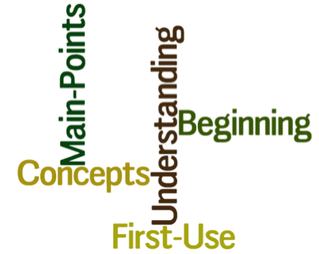
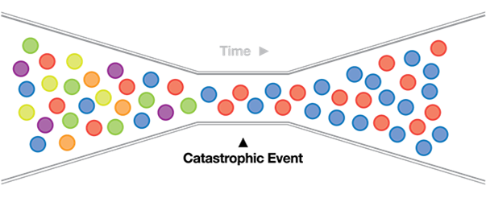
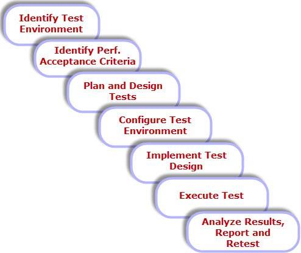
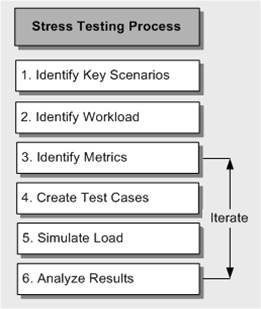

Performance testing
Goal based methodology
TABLE OF CONTENTS
- Performance vs. Load vs. Stress Testing – Main Concepts
- Testing Tools (Web and API)
- Visual Studio testing tools – Short Overview
- Taurus
Main Concepts
Performance vs. Load vs. Stress Testing
- Different things done for different purposes - in many cases they can be done:
- By the same people
- With the same tools
- At virtually the same time as one another
The Simplest Distinction
-
Performance Testing
- How fast is the system?
-
Load Testing
- How much load can the system process?
-
Stress testing
- Testing with conditions beyond the normally expected ones
- Under what conditions the system will fail?
Performance Testing
Performance Testing
- Performance testing is the process of determining the speed or effectiveness of a computer, network, software program or device
-
Before going into the details, we should understand the factors that governs Performance testing:
- Throughput
- Response Time
- Tuning
- Benchmarking
Performance Testing (2)
- Throughput
- Capability of a product to handle multiple transactions in a give period. Represents the number of requests/business transactions processed by the product in a specified time duration
- As the number of concurrent users increase, the throughput increases almost linearly with the number of requests
Performance Testing (3)
- Response Time- equally important to find out how much time each of the transactions took to complete. Defined as the delay between the point of request and the first response from the product. The response time increases proportionally to the user load
- Tuning- the procedure by which product performance is enhanced by setting different values to the parameters of the product, operating system and other components. Tuning improves the product performance without having to touch the source code of the product. FYI - There is also code tuning
Performance Testing (4)
- Benchmarking - very well-improved performance of a product makes no business sense if that performance does not match up to the competitive products. A careful analysis is needed to chalk out the list of transactions to be compared across products so that an apple-apple comparison becomes possible

Performance Testing (5)
-
What is Performance Testing?
- Determines or validates the speed, scalability, and/or stability characteristics of the system
- Provides stakeholders with information about the quality of the product or service under test
- It is also the superset of other classes of performance-related testing (such as load and stress testing)
Performance Testing (6)
-
The goal of performance testing is not to find bugs, but to:
- Eliminate bottlenecks
- Establish a baseline for future regression testing
- Determine compliance with performance goals and requirements

Performance Testing (7)
-
A variety of performance testing metrics is used in practice – e.g.
- Requests Per Second
- Bytes Per Second
- Latency
- Maximum Concurrency
- Time to first byte
Performance Testing (8)
-
Some popular tools for performance testing are:
- VisualStudio (Ultimate)
- JMeter
- OpenSTA
- Siege
- ab
- httperf
- The Grinder
Performance Testing (9)
Core Performance Testing Process
Load Testing
Load Testing
-
What is Load Testing?
- Testing performance characteristics of an application under specific volumes of load
- Usually a range of the upper and lower limits expected by the business
Load Testing (2)
-
Goals are to improve:
- Performance - reduce the time needed to execute a request
- Scalability - exceed the number of concurrent users anticipated at peak load in production
- Stability - reduce component memory leaks and system crashes
Load Testing (3)
-
Many measurements can be used for Load Testing Metrics
- Average Response Times
- Peak Response Times
- Error Rates
- Throughput
- Requests per Second
- Concurrent Users
Load Testing (4)
-
Load Testing Tools
-
Open Source Tools
- JMeter
- ab http_load
- The Grinder
- Siege
-
Commercial Tools
- Load Runner
- Web Load
- Third-party services
Load Testing (5)
-
Core Load Testing Process
- Identify performance acceptance criteria
- Identify key scenarios
- Create a workload model
- Identify the target load levels
- Identify metrics
- Design specific tests
- Run tests
- Analyze the results
Stress Testing
Stress Testing
-
What is Stress Testing?
- Determining an application’s robustness, availability, and reliability - under extreme levels of load
- Testing while the product is subjected to other stressful conditions e.g. - limited memory, insufficient disk space or server failure
Stress Testing (2)
-
Goals are to
- identify application issues that arise or become apparent only under extreme conditions
- like - heavy loads, high concurrency, or limited computational resources, etc.
Stress Testing (3)
Visual Studio testing tools
VS tools
-
Used for testing functionality and performance
- For web pages, web applications, web sites, web services, and combination of all of these
-
Can be created by recording the HTTP requests and events
- During user interaction with the web application
- The recording also captures: Web page redirects, validations, view state information, authentication,etc.
VS tools (2)
-
Validation rules are predefined criteria which the information contained in the response has to pass through
- Used for validating the form field names, texts, and tags in the requested web page
- We can validate the results or values against the expected result as per the business needs
- Also used for checking the processing time taken for the HTTP request
VS tools (3)
-
Extraction Rules
- Used for collecting the data from the web pages during requests and responses
- Helps us in testing the functionality and expected result from the response
VS tools (4)
-
Web Performance Tests require a data source
- Used for populating data to the test methods
- Could be a database, a spreadsheet, or an XML data source
-
Data binding mechanism
- Takes care of fetching the data from the source and providing it to the test methods
VS tools (5)
-
Simple Web Performance Tests
- Generate and execute the test as per the recording with a series of valid flows of events
- Once the test is started there won't be any intervention and it is not conditional
-
Coded Web Performance Tests
- More complex but provide a lot of flexibility
- Used for conditional execution based on values
- Can be created manually or generated with a web performance test recording tool
- Using the generated code, we can control the flow of test events by customizing the code
VS tools (6)
-
The web Test recorder is used mainly to record all the actions performed while browsing web pages
- Records all requests and responses
- Helps us to find out if the request produces the expected result as per the requirement with different scenarios
VS tools (7)
-
When running the Test main elements are
- Web Browser
- Requests
- Response
- Context
- Details
VS tools (8)
Sending Requests-
HTTP-GET (Hypertext Transfer Protocol-GET)
- Appends the query strings to the URL
-
HTTP-POST (Hypertext Transfer ProtocolPOST)
- Passes the name and value pairs in the body of the HTTP request message
VS tools (9)
Query Strings and WebTest Editor- The Query string is the name and the value pair that is created out of the parameters and the data used in web testing
-
The editor shows the tree view of all the requests captured during recording
- Exposes the different properties of requests and the parameters for each request
- Extraction and Validation rules can be set
VS tools (10)
Property Levels-
There are different levels of properties that we can set using the WebTest editor on the recorded requests
- WebTest root level
- Request level properties
- Properties for a request parameter
- Setting the extraction and validation rules for the responses
VS tools (11)
-
Load Test Wizard
- Test project should be created first
- Then the new Load Test is added - this opens the wizard and guides us to create the test
-
Scenarios are used for simulating actual user tests with predefined parameters:
- Think Time
- Load Pattern
- Test Mix model
- Test Mix
- Network Mix
- Browser Mix
VS tools (12)
-
Exporting to Excel
- Results from load testing can be exported to Excel
- Use the Create Excel Report option in the toolbar of the Load Test result editor
Taurus
Taurus (2)
-
JMeter
- Open-source
- Easy to use (once you've mastered it)
- Pain point - Automation and integration with other system
- Steep learning curve
-
Taurus
- Open source
- Extends and abstracts Jmeter
- Simple way to run and analyze performance test
- Taurus is an acronym that stands for Test Automation Running Smoothly, which reflects its baseline mission
Taurus (3)
-
PROS
- Extremely simple setup and upgrading
- Ability to execute existing JMeter (or Grinder or Gatling or Selenium) tests
- The ability to create new tests from scratch using user- defined files
- Real-time reporting
Taurus (4)
-
PROS
- Ability to integrate with Jenkins for Continuous integration of performance tests. Console stats and pseudo-graphic charts during the test execution
- Easy way to define flexible pass/fail criteria. In case the results exceed a threshold, it is possible to automatically mark test(s) as failed
- Platform-independent- runs where Python and Java can run
Taurus (5)
-
Simple load test with
- 10 concurrent users,
- ramp-up time of 1 minute
- duration of 2.5 minutes
- hitting an blazedemo.com site
- with HTTP GET requests
will look as simple as:
Taurus (6)
---
execution:
- concurrency: 10
ramp-up: 1m
hold-for: 2m30s
scenario:
requests:
- url: http://blazedemo.com
method: GET
Taurus (7)
Let’s assume that the above YAML configuration is stored in example.yml file. In that case, you can invoke it as simple as: bzt example.yml Once you hit Enter, the Taurus engine will start the test execution, including: downloading the latest JMeter version (with the latest plugins) to the ~/.bzt/jmeter-taurus folder
1.preparing the JMeter .jmx script based on the example.yml provided
2.kicking off the actual JMeter test
3.displaying real-time statistics and basic ASCII-art graphs in the text console
4.printing a summary to the console upon the test’s completion
5.saving JMeter test results in format.
 evgenikostadinov@gmail.com
evgenikostadinov@gmail.com